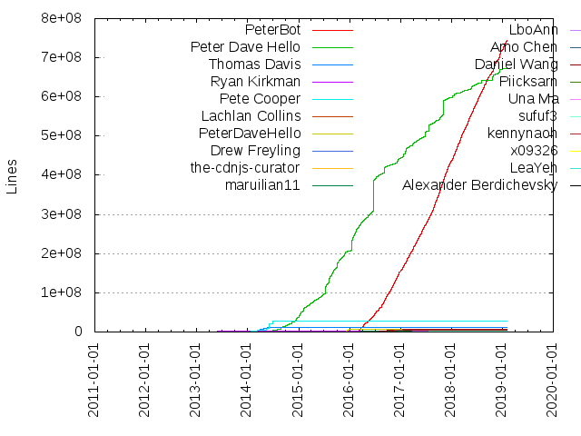
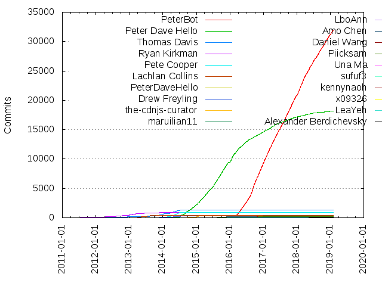

Authors
| Author | Commits (%) | + lines | - lines | First commit | Last commit | Age | Active days | # by commits |
|---|
| Peter Dave Hello | 13815 (47.01%) | 423741084 | 1446898 | 2014-02-22 | 2016-09-30 | 951 days, 15:35:58 | 876 | 1 |
| PeterBot | 5952 (20.25%) | 94716614 | 4979 | 2016-02-18 | 2016-09-30 | 225 days, 6:35:07 | 226 | 2 |
| Thomas Davis | 1318 (4.48%) | 11892843 | 575485 | 2011-05-09 | 2015-03-02 | 1393 days, 5:58:40 | 311 | 3 |
| Ryan Kirkman | 920 (3.13%) | 1256954 | 36643 | 2011-02-25 | 2015-09-08 | 1655 days, 10:30:26 | 334 | 4 |
| Pete Cooper | 881 (3.00%) | 27225625 | 608972 | 2013-11-22 | 2014-06-30 | 219 days, 19:14:03 | 127 | 5 |
| Lachlan Collins | 451 (1.53%) | 179577 | 44044 | 2013-03-20 | 2013-10-14 | 208 days, 12:59:05 | 44 | 6 |
| PeterDaveHello | 351 (1.19%) | 6858585 | 708 | 2015-12-09 | 2016-01-02 | 24 days, 14:23:49 | 25 | 7 |
| Drew Freyling | 338 (1.15%) | 665368 | 13611 | 2012-11-02 | 2016-09-01 | 1398 days, 23:32:51 | 151 | 8 |
| the-cdnjs-curator | 337 (1.15%) | 88349 | 189 | 2014-07-11 | 2015-03-07 | 239 days, 0:50:04 | 88 | 9 |
| maruilian11 | 237 (0.81%) | 1180939 | 83 | 2015-06-15 | 2016-03-24 | 282 days, 1:20:22 | 125 | 10 |
| Amo Chen | 229 (0.78%) | 529978 | 5178 | 2015-07-10 | 2016-06-08 | 334 days, 11:47:57 | 65 | 11 |
| Piicksarn | 147 (0.50%) | 211480 | 2951 | 2015-07-06 | 2016-09-19 | 441 days, 22:21:09 | 72 | 12 |
| Daniel Wang | 125 (0.43%) | 4630285 | 32 | 2015-11-29 | 2016-09-30 | 305 days, 23:50:27 | 87 | 13 |
| Una Ma | 100 (0.34%) | 508909 | 74 | 2015-06-14 | 2016-09-30 | 473 days, 1:03:28 | 74 | 14 |
| x09326 | 73 (0.25%) | 187676 | 7 | 2016-03-18 | 2016-09-26 | 191 days, 12:23:58 | 64 | 15 |
| LeaYeh | 60 (0.20%) | 19905 | 31 | 2015-06-22 | 2016-01-22 | 214 days, 13:10:35 | 36 | 16 |
| pvnr0082t | 58 (0.20%) | 203094 | 22 | 2016-03-19 | 2016-05-23 | 65 days, 13:20:07 | 47 | 17 |
| Ryan | 56 (0.19%) | 362379 | 17058 | 2013-01-07 | 2014-10-18 | 648 days, 22:06:29 | 25 | 18 |
| kennynaoh | 53 (0.18%) | 774824 | 2 | 2016-03-18 | 2016-09-29 | 194 days, 11:32:56 | 30 | 19 |
| Riccardo Magliocchetti | 50 (0.17%) | 9468 | 33 | 2011-11-17 | 2015-01-26 | 1165 days, 18:00:21 | 24 | 20 |
These didn't make it to the top: kenny, Juan Gallardo, Jack Doyle, danny ye, Han Lin Yap, John-David Dalton, Robert Jackson, naoh, Gaurav Arora, Eryx, Gavin Lloyd, Ming, Ionică Bizău, bmcustodio, Greg Franko, samot, Victor Costan, Leo Horie, Guan Ru Wang, Pascal Herbert, Matthew Podwysocki, juliusrickert, Jason Hafer, josdejong, Johannes Koggdal, Sascha Droste, Leonard Ehrenfried, Kurt Zenisek, nolsherry, Nicholas Bollweg, Jimmy Yuen Ho Wong, Giovanny Andres Gongora Granada, Alexander Bayandin, wittemann, meltingice, Misha Koryak, Arnaud Gourlay, Yang Zhang, Xavier Gracia Jr, Victor Jonsson, Kostas, Graham Campbell, Admiralsmaster, linagee, Wes Gorgichuk, Serkan Yerşen, Roman Kozlovskyi, Pavel Pavlov, Paul O’Shannessy, Donghwan Kim, Arnold Daniels, 7wonders, Nicola Molinari, Josh McCarty, Johanna Mantilla Duque, Jens Arps, Hunter Wu, Daniel Freedman, kpdecker, Terry, Terin Stock, Sherry, Michael Payne, Kit Cambridge, James Fleeting, Eric, Andrea Giammarchi, Adam Shaw, thomas, gladson, Tomek Wytrebowicz, Teng Yifei, Pawel Kozlowski, Olivier Louvignes, John Papa, Jacob Rief, Isaac Kwan, David Miller, Chia-liang Kao, Bryce Dorn, yehya, marcos@paliari.com.br, alfred, Zlatan Vasović, Walter Lee Davis, Troy Morehouse, Terry Mun, Santiago M. Mola, Kijin Sung, Juha Paananen, Jon Faustman, Dhruva Ray, Craig Michael Thompson, Artem Chivchalov, Alfred Wassermann, wolfflow, susiii, joeyvandijk, jesfrk7, hebbet, bugreport0, aaunel, Tobias von Klipstein, Tal Ater, Shahrukh A. Khan, Ryan Eastridge, Philip Walton, P THE AWESOME, Oliver Hartl, Morteza Ansarinia, Michelle Steigerwalt, Michael Gerhaeuser, Michael Cordingley, Matt Robenolt, Jonathan Fielding, Jeffrey Gilbert, Erik Wickstrom, Daniël W. Crompton, Blair Vanderhoof, A.J. May, tcorral, suuoh, kentaromiura, iCr, Yishen Chang, Todd Motto, Thomas, Sebastian Krebs, Ross Edman, Robert Hoffmann, Rich Milns, Oliver Nightingale, Michael Best, Matt Jordan, Mark Healey, Luke Page, Lorenzo Boccaccia, Kris_B, Kenneth Powers, Justin Balthrop, Jason Moon, Jason Dobry, Jason Butz, Diego Fernandez, Derek Shockey, Dean Radcliffe, Dean Malmgren, Daniele, Daniel Beauchamp, Cody Chan, Andrey Sitnik, AdmiralsMaster, will Farrell, thomasdavis, ruff, robert-hoffmann, ping, magalhas, lauren mccarthy, kangax, chrisharrington, Zach Q, Xavier Boubert, Tucker Whitehouse, SemanticUIBot, Sean Juarez, Romain Beuque, Nolan Lawson, Mr.doob, Mikhail Gusarov, Menno Holtkamp, Mattia Larentis, Lin Xianyi, Kyle Varga, Kevin Burke, Kei, Jordan Harband, Jonny Strömberg, Jonathan Bender, Jerome Gravel-Niquet, Jeff Harrell, Jean-Francois Moy, Jan Sorgalla, Ivan Strelkov, Ivan Sagalaev, Gregor Aisch, Georgios Kaleadis, Erik Schierboom, DmitriiB, DimitarChristoff, Dennis Ploeger, David DeSandro, Colin Eberhardt, Chen Yijun, Austin Winstanley, Anton Sekatski, Andrey A.I. Sitnik, Alexander, Adam Schodde, Adam Draper, Adam Bouqdib, wout, vitalets, urakozz, unknown, tmyoung, sergiokas, multiformeingegno, jirikavi, imagentleman, dexteryy, Sidney San Martín, SheetJS, Roman Dvornov, Richard Moorhead, Philip Harrison, Peter Walsham, Nicolas Brassard, NathanJang, Min-Zhong 'John' Lu, Michael Benford, Martin Gontovnikas, Leon Gersen, Laurens Rietveld, Lauren McCarthy, Kumar Harsh, Kenan Yildirim, Ken Howard, João Jerónimo, Jonathan Creamer, Joey Parrish, Jan T. Sott, Jan Paepke, Gordon Woodhull, Gene Diaz Jr, Etienne Lemay, Erik Södermark, Ellis Berner, Di Wu, David Bau, Björn Stein, Benjamin Tan, Artur Heinze, Andrew Brampton, Ali Shakiba, xryzor, vikas5914, ssims, shallaa, root, px, mfalaize, kristoferjoseph, jdanyow, hustcc, geta6, forlent, dnco, coder007, ahocevar, Yuvi Panda, Yasyf Mohamedali, Yaohan Chen, Willis Blackburn, WickyNilliams, Uri Shaked, Todd Horst, Tianon Gravi, TechKat, Szépe Viktor, Sylvain UTARD, Steven Lu, Simeon Cheeseman, Simeon, Shahbaz Javeed, Ryan LeFevre, Rodrigo Braga, Robert Mosolgo, Ricky Elrod, Péter H. Gombos, Punya Biswal, PunKeel, Pratik Soares, Peter Wagenet, Peter Josling, Pavel Reznikov, Osman Nuri Okumuş, Octavian Damiean, Norbert Crombach, Noah Cooper, Nathan Phillip Brink, Moses Holmström, Mike Bild, Mikael Brevik, Michael Caputo, Melvin Laplanche, Max Marrone, Mattias Erming, Matt Reed, Matias Meno, Mathias Bynens, Markus Kohlhase, Mark Leusink, Mario Finelli, Marcos Chicote, Magnus Burton, Lorenzo Raffio, Kyle Spearrin, J�rgen Viljaste, Just van den Broecke, José Magalhães, Jonathan Neal, Jon Galloway, John Slegers, Johan Dahlberg, Jean-Francois Paradis, Jason Johnston, Jaroslav Kostal, James Campos, Ivan Malopinsky, Hiroaki Nakamura, Henrik Ammer, Hayden Bleasel, Francois-Xavier Gentilhomme, Franck BRUNET, Filippo Valsorda, Evrim Çabuk, Ethan Piliavin, Enrique Ibarra, Emanuele Marchi, Denis Ryabov, Daniel Wangldflkgdf, Daniel Speichert, Daniel Koo, Dan Vanderkam, Dan Pastusek, DRayX, Cysioland, Craig McKie, Christian Sturm, Chris Coyier, Brian Dukes, Boris Nagaev, Blaise Kal, Benjamin Van Ryseghem, Benjamin Roth, Ben Bradshaw, Attila Beregszaszi, Asaf David, Artem Polikarpov, Anestis, Adam Comella, Abishek R Srikaanth, Aapo Kiiso, なりたけいすけ, wdamien, viskin, vinch, victorjonsson, vakata, tomByrer, slackersoft, rawmaterials, q--, pitr, pimterry, paul, onaluf, nulltask, nexus, kwebster, knalli, kireerik, kiran, katowulf, just-boris, ifandelse, hackerwins, gasolin, garrypas, davidhellsing, chvillanuevap, carl sednaoui, antofran22, andot, alswl, aliuk2012, Yann 'Aaunel' Eves-Hollis, Will Butler, WebReflection, Ward Bell, Walker Hamilton, Vincent DURMONT, Victor Istomin, Vedran Miletić, Utkarsh Sengar, Usman, Tyler Wolf, TravisCarden, Tomasz Ducin, Tomas Kirda, Tom Sterritt, Tim Robertson, Tim McEwan, Tilman Griesel, Thomas Lutz, Thermionix, Tero Parviainen, Tanin Srivaraphong, Steve Ratcliffe, Stephen Mathieson, Stefan Schlesinger, Stefan Penner, Stefan Neculai, Stefan Hedman, Spencer Rinehart, Silver Paladin, Shinichi Tomita, Shane Walker, Shane Spencer, Sergey Kupletsky, Sebastian Wallin, Sean Dokko, Scott Robbin, Samuel Killin, Ryan J. Bonnell, Ryan Cole, Rory Hughes, Rory Fitzpatrick, Ronald Holshausen, Romuald Bulyshko, Rob Richardson, Richard Hull, Rich Harris, Randy Edmunds, Ragnar Þór Valgeirsson, Rafael Staib, Pusztai Tibor, Pierre Matri, Phuoc Nguyen, Petr Vozka, Peter Gao, Peter C Miller, Pavel Voznenko, Pavel Puchkin, Pavel Khakhulin, Pavel Hahulin, Paul Tremberth, Oleg Kiriljuk, Nima Jalali, Nick Parsons, Nick Comer, Murat Akdeniz, Mottie, Morton Fox, Miriam Zusin, Min-Zhong "John" Lu, Mike Lee, Michiel de Jong, Michael P, Michael Matyi, Max Franz, Matías Fidemraizer, Matthew Wagerfield, Matteo Pagliazzi, Matteo Figus, Matt, Masahiro Tanaka, Martin@MBP, Martin Martimeo, Marsup, Markus Reiter, Mark Dalgleish, Marcin Warpechowski, Marcelo Diniz, Mahafuzur Rahman, Lou Huang, Loïs Di Qual, Leonard Tirulnikov, Kunal Mangaraj, Kostantinos Margaritis, Kent C. Dodds, Keith Blaha, Karl Horky, KARASZI István, Julian Motz, Juha Syrjälä, Josh McCullough, Jos de Jong, Jonathon Creenaune, Jon Nylander, John Voloski, John Barker, Johann Philipp Strathausen, Joey van Dijk, Joe Nelson, Jimmy Mabey, Jeremy Hull, Jeppe Toustrup, JeffJacobson, Jayen Ashar, Jason Martin, Jason Barry, James M. Greene, Jacob Beard, JP Richardson, Igor Minar, Hayden James, Hay Kranen, Gunar C. Gessner, Guido Gautier, Greg Pagendam-Turner, Gordon Stratton, Gianni Chiappetta, Gerome, Georgi Hristozov, Fredi Bach, Filip Oščádal, Evgeny Poberezkin, Evan You, Evan Prodromou, Evan Moran, Eric Hutchinson, Erez Mazor, Emma Guo, Emily Eisenberg, Elia Schito, Elan Ruusamäe, Dyaa Eldin, Dmitri Voronianski, Dirk Lüth, Didiet Noor, Dianne Castillo, Deric Crago, David Stensland, David Hellsing, Danny Ye, DanielRapp, Daniel W. Crompton, Daniel Müller, Daniel Garcia, Daniel Eden, Dan Keder, Corry Haines, Cody Lerum, Chucho Valladares, Christopher Herrman, Christopher Harris, Christopher Boone, Christian Vaas, Chris S, Chris O'Donnell, Chris Miller, Chris James, Chris Hopkins, Chris Aljoudi, Bryce Kahle, Brian Hartvigsen, Brian Hann, Brett Wejrowski, Brett Alton, Brandon Ross, Brandon Anzaldi, Boris Kozorovitzky, Blake Niemyjski, Bjørn Madsen, Binyamin, Bill Pullen, Bilge, Benjamin Kerensa, Ben Wong, Ben Alpert, Bartłomiej Semańczyk, Bardi Harborow, Balazs Kutil, Bachue Zhou, Austin Morton, Austin, Aurimas, Asu4ni, Ariel Mashraki, Andy Dayton, Andrew Wei, Andrew Page, Andrew Gurinovich, Andreas Hocevar, Anant Narayanan, Amsul, Alonso Torres, Alexander Grüneberg, Alex Nicksay, Alex Dong, Alejandro García Iglesias, Alejandro Exojo, Ahmad Nassri, Adam Schwartz, Šime Vidas, zhixin, zhaozhiming, zhaoda(赵达), zhangclb, yahyaKacem, xiaosong, xPaw, x1506, william malo, webxl, webreflection, vurtupesz, vitaliy-w, vaibhav jain, vagdwd, ungki, ubuntu-server, ubragg, tybenz, tristen, traviswimer, tomas.corral, tmorin, tjbp, thyforhtian, thedersen, termopro, t0xicCode, steve0hh, smarts, seven-phases-max, rveciana, rschaosid, romgain, robfletcher, ricordisamoa, rhubarbselleven, remy, remimarsal, quba, ppoffice, pieroxy, peteygao, pc035860, nuvos-gurtah, nstavrakakis, nnajm, neveldo, mperdeck, monsat, monkeywarrior, millermedeiros, melchior-b, megawac, me4502, maxbiso, marstuart, marquete, marcelduran, maralla, mail.someone@gmail.com, m-att, lloiser, limitimil, kyr, koldev, jywsn, jvalladares, jonobr1, jongalloway, johan-gorter, jdowell, jc00ke, j-l-n, iwdmb, hsiaohsuan1l1l, hereandnow, gttds, genintho, genichyar, fyears, fishballLin, finom, ewheeler, ethanpil, eric, egilkh, eXon, dwong, dsri, diagonalfish, dfernandez79, deizel, dalanzg, ctalkington, crissdev, chriszarate, chrishaum, bvanrijn, buzzdecafe, boxopi, bollwyvl, beaubbe, austin, ashleydw, asdf168ghjkl, asatour, aponxi, allnightlong, alexandercastillo, ajile, ajameson, ahw, adwin5, aFarkas, a1090200, Ziad Khoury Hanna, Zeno Rocha, Zelenenky, Zane Shannon, Zach Kanzler, Zac Bruce, Yuriy Nemtsov, Yuri Kanivetsky, Yudi Rosen, Yohan Koehler, Yaroslav Kiliba, Xotic750, XeonCore, Xavier Gracia, Wing Lian, Willis, William Riley-Land, William Pain, William Ono, William Di Luigi, Wendal Chen, Wei Zhu, Wayne Hoover, Volodymyr Boichentsov, Volodymyr, Vlad Akilov, Vithon, Vinta, Vincent Lee, Vincent Kyle Eusebio, Valentin Vasilyev, Urmil Parikh, Tyler G. Hicks-Wright, Triangle717, Trey Shugart, Travis Clarke, Torben Köhn, Tony Wu, Tony Tong, Tomas Corral, Tom Stevens, Tom MacWright, Tom Hare, Tom Fuertes, Toilal, Tobias Berling, Tim Yager, Tim Osborn, Tim Macfarlane, Tim Hudson, Tim Etler, Tim Douglas, Thomas Stachl, Thomas Grainger, Thom Nichols, Thodoris Greasidis, Thibaud Colas, Teruki Shigitani, Terry Moore, Teddy Cross, Tech Luminaire, Tatsuo Kaniwa, Tarek Wahab, Taeho Kim, Tadeo Kondrak, Sébastien Cevey, Szymon Nowak, Syed I.R, Sultan Tarimo, Suguru Motegi, Steven Levithan, Steve, Stephen L. Blum, Stephen J. Fuhry, Steffen Roßkamp, Stefan Kopetschke, Stanley Stuart, Stan Lemon, Stacey Cordoni, Spencer Alger, Sin-young "Divinespear" Kang, Simon Skov Boisen, Simon Olofsson, Simon Brunel, Simo Kinnunen, SimeonC, Silvio Paganini, Seva Baskin, SeungHyun PAEK, Seun Ogedengbe, Seth Westphal, Seth Livingston, Seth Kinast, Selva, Selim Arsever, Seggy Umboh, See Guo Lin, Sean Lip, Scán, Scott Vitale, Scott Sauyet, Scott Keller, Scott Fairgrieve, Scott Elwood, Scott Buckley, Schildknecht Florent, Sandeep Dinesh, Sam Thorogood, Sam Schooler, Sam Kuehn, Salvatore Garbesi, RyanC, Ryan Senkbeil, Ryan Morrin, Ryan Johnston, Ryan Caskey, Rui Araújo, Ruben Porras, Ron Valstar, Ron Gross, Ron Elliott, Rohith Reddy Kumbharkar, Rodney Rehm, Rodney Norris, Robin Helgelin, Rob Loach, Rob Gietema, Rob Garrison, Rob Fletcher, Rob Edwards - iMac, Riley Shaw, Rico Sta. Cruz, Richard van Dijk, Richard Janicek, Richard Eames, Richard Dingwall, Rich-Harris, Rich Manalang, Remy Sharp, ReadmeCritic, Razvan Bangu, Raphaël P. Barazzutti, Rajeev Cyrus, Raimo Tuisku, RAIDfire, Quentin Rider, Puneet Goyal, Pranav Parikh, Pongstr, Pomax, Pixellurgy, Petr Vacha, Peter Willemsen, Peter Nguyen, Peter Hoffmann, Per Eckerdal, Per Cederberg, Pavel Karoukin, Paulo Borges, Paul Orrungroj, Paul Irish, Patrick Mulder, Patrick Altman, Pascal Pohl, Panayiotis Lipiridis, Palmer, Pablo Vallejo, Oxana, Ovidiu Cherecheș, Osman Nuri Okumus, Osman Nuri, Onur Yıldırım, Ollie, Oliver Janik, Niyaz PK, Nils Schneider, Nikolai Onken, Nik Butenko, Nihey Luz Takizawa, Nicolas Hefti, Nicolas Bevacqua, Nicklas Ansman Giertz, Nick Walke, Nick Payne, Nick Jones, Nick Gottlieb, Nicholas Jefferson, Nic Jansma, Nathaniel Kelner, Nathaniel Higgins, Nathan Whitehead, Nathan Meulenberg, Nate Goldman, Mário Gonçalves, Musee Ullah, MrSaints, Mike Robinet, Mike Kazantsev, Mike Fiedler, Mike Bostock, Mike, Mihnea Simian, Mihail Fedorov, Mickaël Tricot, Mickaël Tricot, Michael Schuller, Michael Richards, Michael P. Bazos, Michael Jackson, Michael D. Hall, Michael Bleigh, Michael Baudino, Merlin Nimier-David, Meng-Jiun, Chiou, Max Philippov, Max Favilli, Matthew Metnetsky, Matthew Gall, Matthew Dzaman, Matthew Boston, Matt Taylor, Matt Swensen, Matt Liberty, Matt Harrison, Matt Gale, Matt Erkkila, Matias Fidemraizer, Martin Wittemann, Martin Polden, Martin, Markus Olsson, Mark Vasilkov, Mark Panaghiston, Mark Hayes, Mario Izquierdo, Marcy Sutton, Marcos Placona, Marcos Neves, Marco Bettiolo, Marc Hougardy, Marc Diethelm, Manuel, Malcolm Locke, Maks Surguy, Makis Tracend, Mahemoff, MRW, Lx Yu, Lukasz Kryger, Lukas Lipka, Luc Stepniewski (Eclipse), Luan Almeida, LostCrew, Lorenzo, Lihan Li, Lieven Janssen, Leo Winter, Lee Hanxue, Lee Byron, Laurent G, Lasse Rafn, Landon Schropp, Kyle Simpson, Krzysztof Hasiński, Krister Berntsen, Krishna Kishore Shetty, Kory Nunn, Kody Peterson, Knotix, Kirill Cherkashin, Kevin Simper, Kevin Montag, Kevin Brown, Kerrick Long, Ken Merthe, Kelly Selden, Keith Morrow, Karl Freeman, Kaleb Hornsby, Kabir Shah, Ka Yue Yeung, Jérôme Fafchamps, Ján Neščivera, Justyna Wojtczak, Justin York, Justin Maier, Julio Paredes, Julian Maughan, Juha Lindstedt, Juan C. Müller, JqueryFan, Joshua Sheard, Joshua Newman, Joshaven Potter, Josh Lubaway, Josh Hull, Joseph Coffland, Joscha Feth, JordanMagnuson, Jono Brandel, Jonathan Soma, Jonathan Ong, Jonathan Chan, Jonathan Beezley, Jonathan Allard, Jonas Fischer-Maeck, Jon Stevens, Jon Rosebaugh, Jon Jaques, Joi Glifberg, John Laceda, John Haugeland, John Batte, Johan Gorter, Joel Wilson, Joe Taylor III, Joe Roberts, Joe Lambert, Joe George, Joe DF, Joe Blau, Jesse Pollak, Jess Telford, Jess Kay, Jeremy "EndenDragon" Zhang, Jeremy, Jeffrey Lin, Jeffrey Cafferata, Jeff Paine, Jeff Mesnil, Jeff Kwan, Jeff Hlywa, Jeff Fisher, Javi Aguilar, Jason Tremper, Jason Miller, Jarrod Overson, Jarek Rencz, Jani Uusitalo, Janas Page, Jan Raasch, Jan Pieter Waagmeester, James Wilson, James Turnbull, James Thomas, James Sutton, James Simpson, James Hartig, James Florentino, James Fernandes, James Byrum, James A. Rosen, Jake Soenneker, Jacobo Tabernero, Jacobite89, JJ Buckley, J Chu, Ivan Petrov, Ivan Nevostruev, Ivan Bozhanov, Iurii Komarov, Ishan Chatterjee, Isaac Cambron, Isaac Bythewood, Irene Ros, Illimar Tambek, Igor Novikov, Idris, Ian Gilman, Ian, Hyunje Alex Jun, Hunter Perrin, Hugo Jobling, Haruki Hasegawa, Harry Truong, HaoHeng, Hans Staugaard, Hamilton Chapman, Gustavo Leon, Gus Wezerek, Guille Paz, Guillaume RODRIGUEZ, Gregory Bell, Greg Dietsche, Glenn Grant, GitLab, Giovanni Cappellotto, Gianfranco Palumbo, Gerson Minichiello, Gereon, George Mayorga, George Bashi, George, Georg Fischer, Geo Perez, Gary Chamberlain, Gan Eng Chin, Gagan Bansal, Gabriele Rabbiosi, Gabriel Luethje, Gabriel Lesperance, Gabriel Cebrian, Gabor Nagy, FrozenCow, Franklin Ta, Francois, Francesc Rosàs, Forest Carlisle, Forbes Lindesay, Florian Kissling, Florian Andrea JAMES, Florent DUVEAU, Félix Saparelli, Feross Aboukhadijeh, Fengyuan Chen, Fazi, Fatih Kadir Akın, FatBat, Fagner Brack, Evrim Çabuk, Evrim, Evgeny Chernyavskiy, Evert Timberg, Evan R, Evan Magoni, Evan Culver, Evan Bleiweiss, Eris, Erik Krogh Kristensen, Erik Flowers, Eric Wendelin, Eric Naeseth, Eric Betts, Enrico Deleo, ElliotB, Eisbehr, Eduardo Cereto Carvalho, Edmund von der Burg, Edgars Baduns, Ed Finkler, Duncan McDougall, Drew Jaynes, Drew Baumann, Dr. Oleg Kiriljuk, Doug Rinckes, Doug, Doron Gutman, Doridian Draconia, Dominic Dagradi, Dominic Barnes, Dmitry Yakimenko, Dmitry Shirokov, Dmitry Korniychuk, Dmitry Filatov, Dmitry Egorov, Dmitriy Shekhovtsov, Diwaker Gupta, Diego Plentz, Derek Wong, Dereckson, Dennis Eriksen, Denis Dervisevic, David Merfield, David Kitchen, David Guillot, David Chester, David Berneda, Dave Landry, Darío Javier Cravero, Daniel Rapp Thomas, Daniel Rapp, Daniel Micay, Daniel Lo Nigro, Daniel K, Daniel Hengeveld, Daniel Hackney, Daniel Beckwith, Dan Sosedoff, Dan Allen, Dan Abramov, Dailos Aday Medina Méndez, DaAwesomeP, DJ Lee, Cyrus S, Cyrus David, Cristiano Belloni, Craig Hills, Corps, Colin Keith, CodeAnimal, Cloudinary, CitySim, Christopher Rogers, Christopher Manning, Christophe Brisbois, Christoph Schiessl, Christian Tellnes, Christian Stade-Schuldt, Christian Boenning, Chris Sullins, Chris Rebert, Chris Ledet, Chris Kilding, Chris Gillis, Chris Chamberlin, Chris, Choongmin Lee, Chen-Pang He, Cheese-Tornado, Che-Pin Chang, Chalise Grogan, Chad Scira, Cedric, Casey Duquette, Casey, Carl-Erik Kopseng, Carl Sednaoui, Camilo Sosa, Callum Macrae, Caleb Meredith, Caitlin Potter, Bruno Sant'Anna, Brian Miller, Brian M Hunt, Brian Lindauer, Brian Landers, Brian Grinstead, Brian Gonzalez, Brian Ghidinelli, Breck Yunits, Borderliner, Boopathi Rajaa, Berengar W. Lehr, Benjamin Ryzman, Benjamin Reid, Benjamin Lupton, Bence Nagy, Ben Ma, Ben Fletcher, Ben, Baris Aydinoglu, Barin Britva, Aurélien Delogu, Atif Azam, Asvel, Aske Hansen, Ashwin Ramaswamy, Arturs Sosins, Artem Suschev, Arnaud Richard, António Afonso, Antonio Felguerez, Anton D, Anton Bykov, Anthony Carlucci, Anshul Verma, Andy Yong, Andy Shapiro, André Jaenisch, André Diego Piske, Andrey Gubanov, Andrew Young, Andrew Rowls, Andrew Rasmussen, Andrew Plummer, Andrew Mussey, Andrew Connell, Andrew, Andrei Telteu, Andreas Savvides, Andrea Campi, Anders Steiner, Amir Tocker, Alexis Lee, Alexandr Korsak, Alexander Tarmolov, Alexander Solovyov, Alexander Madyankin, Alexander Harding, Alexander Farkas, Alexander Castillo, Alex Swindler, Alex Morega, Alex Kyriakidis, Alex Dickson, Alex Dergachev, Alessandro Miliucci, Alberto, Alastair Gifillan, Alan Hogan, Alan Fachini, AlSquire, Akshay Patel, Aint Got, Ahmet Özkaya, Ahmad Pram Prayogo Pangestu, Aden Kelly, Adam Marcus, Adam Argyle, Abhay Rana, Abdelahad SATOUR, Aaron Raddon, 2betop, 1vasari
Only top 20 authors shown
Only top 20 authors shown
| Month | Author | Commits (%) | Next top 5 | Number of authors |
|---|
| 2016-09 | PeterBot | 1430 (78.18% of 1829) | Peter Dave Hello, Daniel Wang, kennynaoh, Una Ma, x09326 | 20 |
| 2016-08 | PeterBot | 1115 (78.47% of 1421) | Peter Dave Hello, Daniel Wang, Una Ma, Guan Ru Wang, David Miller | 18 |
| 2016-07 | PeterBot | 746 (61.60% of 1211) | Peter Dave Hello, Daniel Wang, kenny, Una Ma, x09326 | 18 |
| 2016-06 | PeterBot | 648 (55.62% of 1165) | Peter Dave Hello, kenny, Daniel Wang, Una Ma, x09326 | 27 |
| 2016-05 | PeterBot | 665 (54.60% of 1218) | Peter Dave Hello, naoh, pvnr0082t, x09326, kenny | 24 |
| 2016-04 | PeterBot | 669 (54.35% of 1231) | Peter Dave Hello, pvnr0082t, danny ye, x09326, kennynaoh | 23 |
| 2016-03 | Peter Dave Hello | 592 (50.47% of 1173) | PeterBot, maruilian11, danny ye, Una Ma, pvnr0082t | 18 |
| 2016-02 | Peter Dave Hello | 648 (72.97% of 888) | PeterBot, maruilian11, Amo Chen, Piicksarn, rveciana | 15 |
| 2016-01 | Peter Dave Hello | 894 (90.76% of 985) | maruilian11, Amo Chen, PeterDaveHello, Piicksarn, Vinta | 21 |
| 2015-12 | Peter Dave Hello | 456 (50.05% of 911) | PeterDaveHello, maruilian11, Amo Chen, Piicksarn, LeaYeh | 28 |
| 2015-11 | Peter Dave Hello | 672 (88.54% of 759) | Amo Chen, maruilian11, LeaYeh, Piicksarn, Una Ma | 33 |
| 2015-10 | Peter Dave Hello | 806 (89.96% of 896) | maruilian11, Piicksarn, Amo Chen, LeaYeh, Ming | 23 |
| 2015-09 | Peter Dave Hello | 766 (90.01% of 851) | Amo Chen, Piicksarn, maruilian11, Ming, tjbp | 19 |
| 2015-08 | Peter Dave Hello | 766 (83.17% of 921) | Amo Chen, Piicksarn, maruilian11, Ming, Una Ma | 23 |
| 2015-07 | Peter Dave Hello | 772 (82.74% of 933) | Piicksarn, Amo Chen, LeaYeh, maruilian11, Drew Freyling | 30 |
| 2015-06 | Peter Dave Hello | 484 (89.13% of 543) | maruilian11, LeaYeh, Drew Freyling, Punya Biswal, Adam Comella | 31 |
| 2015-05 | Peter Dave Hello | 555 (91.13% of 609) | Ionică Bizău, shallaa, Serkan Yerşen, なりたけいすけ, Simeon Cheeseman | 35 |
| 2015-04 | Peter Dave Hello | 532 (90.94% of 585) | Drew Freyling, Jason Dobry, Yuvi Panda, Benjamin Van Ryseghem, victorjonsson | 34 |
| 2015-03 | Peter Dave Hello | 517 (89.29% of 579) | Ionică Bizău, the-cdnjs-curator, Xavier Boubert, knalli, Usman | 39 |
| 2015-02 | Peter Dave Hello | 507 (83.11% of 610) | the-cdnjs-curator, Drew Freyling, David DeSandro, Abishek R Srikaanth, kiran | 40 |
| 2015-01 | Peter Dave Hello | 459 (68.82% of 667) | the-cdnjs-curator, Drew Freyling, Cody Chan, jdanyow, slackersoft | 37 |
| 2014-12 | Peter Dave Hello | 414 (77.97% of 531) | the-cdnjs-curator, Thomas Davis, Drew Freyling, Wes Gorgichuk, Peter Josling | 39 |
| 2014-11 | Peter Dave Hello | 323 (86.60% of 373) | Thomas Davis, Drew Freyling, Austin Winstanley, kwebster, Steve Ratcliffe | 27 |
| 2014-10 | Peter Dave Hello | 331 (84.65% of 391) | Drew Freyling, aaunel, the-cdnjs-curator, Mike Bild, ping | 34 |
| 2014-09 | Peter Dave Hello | 358 (80.45% of 445) | the-cdnjs-curator, bugreport0, Andrea Giammarchi, Thomas Davis, Matt | 30 |
| 2014-08 | Peter Dave Hello | 267 (78.99% of 338) | Drew Freyling, Thomas Davis, Shahrukh A. Khan, the-cdnjs-curator, Pavel Pavlov | 31 |
| 2014-07 | Peter Dave Hello | 358 (63.03% of 568) | Thomas Davis, the-cdnjs-curator, Giovanny Andres Gongora Granada, Pavel Pavlov, Kijin Sung | 60 |
| 2014-06 | Pete Cooper | 221 (45.29% of 488) | Thomas Davis, Peter Dave Hello, Juan Gallardo, Drew Freyling, Isaac Kwan | 72 |
| 2014-05 | Pete Cooper | 225 (31.78% of 708) | Thomas Davis, Drew Freyling, Peter Dave Hello, Juan Gallardo, Gaurav Arora | 98 |
| 2014-04 | Thomas Davis | 144 (27.32% of 527) | Pete Cooper, Peter Dave Hello, Drew Freyling, Jason Hafer, Leo Horie | 76 |
| 2014-03 | Pete Cooper | 147 (28.16% of 522) | Thomas Davis, Peter Dave Hello, Drew Freyling, linagee, Eryx | 96 |
| 2014-02 | Pete Cooper | 117 (32.77% of 357) | Thomas Davis, Drew Freyling, Pascal Herbert, Ryan Kirkman, Troy Morehouse | 96 |
| 2014-01 | Thomas Davis | 123 (32.03% of 384) | Drew Freyling, Pete Cooper, Ryan, Ryan Kirkman, Robert Jackson | 89 |
| 2013-12 | Thomas Davis | 103 (37.87% of 272) | Ryan, Ryan Kirkman, 7wonders, Pete Cooper, Robert Jackson | 79 |
| 2013-11 | Thomas Davis | 84 (32.68% of 257) | Ryan Kirkman, Drew Freyling, Eryx, Ryan, robert-hoffmann | 75 |
| 2013-10 | Thomas Davis | 56 (28.57% of 196) | Ryan Kirkman, Lachlan Collins, Drew Freyling, Ross Edman, Robert Jackson | 66 |
| 2013-09 | Thomas Davis | 89 (33.97% of 262) | Lachlan Collins, Ryan Kirkman, Tucker Whitehouse, Terin Stock, Matthew Podwysocki | 75 |
| 2013-08 | Lachlan Collins | 61 (31.77% of 192) | marcos@paliari.com.br, Thomas Davis, Matthew Podwysocki, Ryan Kirkman, Jonathan Fielding | 82 |
| 2013-07 | Lachlan Collins | 105 (40.38% of 260) | Thomas Davis, Ryan Kirkman, Roman Kozlovskyi, Johanna Mantilla Duque, AdmiralsMaster | 70 |
| 2013-06 | Ryan Kirkman | 56 (28.87% of 194) | Lachlan Collins, Thomas Davis, iCr, Di Wu, Sascha Droste | 62 |
| 2013-05 | Lachlan Collins | 70 (38.89% of 180) | Ryan Kirkman, Drew Freyling, P THE AWESOME, Daniël W. Crompton, Alexander | 58 |
| 2013-04 | Lachlan Collins | 83 (51.88% of 160) | Olivier Louvignes, Drew Freyling, gladson, Ryan Kirkman, Nicolas Brassard | 49 |
| 2013-03 | Ryan Kirkman | 75 (33.33% of 225) | Lachlan Collins, Thomas Davis, gladson, Jimmy Yuen Ho Wong, Adam Schodde | 55 |
| 2013-02 | Ryan Kirkman | 87 (53.37% of 163) | Thomas Davis, Jack Doyle, Greg Franko, Matt Robenolt, Rodrigo Braga | 47 |
| 2013-01 | Ryan Kirkman | 99 (49.75% of 199) | Thomas Davis, Jack Doyle, Greg Franko, Victor Costan, bmcustodio | 46 |
| 2012-12 | Ryan Kirkman | 57 (44.53% of 128) | Thomas Davis, Eric, John-David Dalton, Greg Franko, bmcustodio | 32 |
| 2012-11 | Ryan Kirkman | 41 (27.89% of 147) | Thomas Davis, Drew Freyling, wittemann, Arnaud Gourlay, Ivan Strelkov | 35 |
| 2012-10 | Thomas Davis | 34 (29.06% of 117) | Ryan Kirkman, bmcustodio, John-David Dalton, tmyoung, ssims | 34 |
| 2012-09 | Ryan Kirkman | 34 (49.28% of 69) | Tobias von Klipstein, Michelle Steigerwalt, bmcustodio, Michael Payne, Victor Costan | 22 |
| 2012-08 | Ryan Kirkman | 54 (57.45% of 94) | Leonard Ehrenfried, John-David Dalton, Walker Hamilton, Silver Paladin, Pusztai Tibor | 26 |
| 2012-07 | Ryan Kirkman | 31 (53.45% of 58) | alfred, John-David Dalton, Thomas Davis, Mahafuzur Rahman, Hay Kranen | 19 |
| 2012-06 | Thomas Davis | 18 (30.51% of 59) | Ryan Kirkman, Nicholas Bollweg, Octavian Damiean, John-David Dalton, Igor Minar | 17 |
| 2012-05 | Ryan Kirkman | 23 (33.33% of 69) | Riccardo Magliocchetti, Zach Q, Xavier Gracia Jr, sergiokas, Thomas Davis | 19 |
| 2012-04 | Ryan Kirkman | 35 (48.61% of 72) | Xavier Gracia Jr, Riccardo Magliocchetti, alfred, J�rgen Viljaste, Utkarsh Sengar | 20 |
| 2012-03 | Ryan Kirkman | 24 (38.71% of 62) | Thomas Davis, Matt Reed, Mathias Bynens, Yann 'Aaunel' Eves-Hollis, Xavier Gracia Jr | 17 |
| 2012-02 | Ryan Kirkman | 19 (45.24% of 42) | Thomas, Riccardo Magliocchetti, Lin Xianyi, sergiokas, Thomas Davis | 16 |
| 2012-01 | Ryan Kirkman | 15 (50.00% of 30) | Jerome Gravel-Niquet, Alfred Wassermann, meltingice, Thomas Davis, Rob Edwards - iMac | 9 |
| 2011-12 | Thomas Davis | 12 (33.33% of 36) | Riccardo Magliocchetti, Ryan Kirkman, Jon Galloway, Oliver Nightingale, jongalloway | 8 |
| 2011-11 | Thomas Davis | 3 (27.27% of 11) | Ryan Kirkman, Riccardo Magliocchetti, Per Eckerdal, Nicholas Jefferson, Han Lin Yap | 7 |
| 2011-10 | Thomas Davis | 2 (25.00% of 8) | Ryan Kirkman, Selva, Jason Johnston, Gabriel Lesperance, Evan Culver | 6 |
| 2011-09 | Ryan Kirkman | 11 (40.74% of 27) | Thomas Davis, Alfred Wassermann, Chucho Valladares, jvalladares, Tanin Srivaraphong | 9 |
| 2011-08 | Sidney San Martín | 3 (20.00% of 15) | Ryan Kirkman, Oliver Nightingale, webxl, Thomas Davis, Kyle Simpson | 10 |
| 2011-07 | Ryan Kirkman | 9 (42.86% of 21) | Thomas Davis, Han Lin Yap, Ben Bradshaw, remy, Tim Hudson | 9 |
| 2011-06 | Ryan Kirkman | 20 (48.78% of 41) | Han Lin Yap, Philip Harrison, Tim McEwan, Thomas Davis, Rory Fitzpatrick | 12 |
| 2011-05 | Ryan Kirkman | 15 (41.67% of 36) | Han Lin Yap, davidhellsing, Thomas Davis, Jason Barry, pitr | 9 |
| 2011-04 | Han Lin Yap | 8 (47.06% of 17) | Ryan Kirkman, meltingice, samot, Sidney San Martín, Ed Finkler | 6 |
| 2011-03 | meltingice | 6 (42.86% of 14) | Ryan Kirkman, Han Lin Yap, Marc Diethelm, Johannes Koggdal | 5 |
| 2011-02 | samot | 23 (57.50% of 40) | thomas, Ryan Kirkman, meltingice | 4 |
| Year | Author | Commits (%) | Next top 5 | Number of authors |
|---|
| 2016 | PeterBot | 5952 (53.52% of 11121) | Peter Dave Hello, Daniel Wang, maruilian11, Una Ma, x09326 | 108 |
| 2015 | Peter Dave Hello | 7292 (82.27% of 8864) | PeterDaveHello, Amo Chen, the-cdnjs-curator, maruilian11, Piicksarn | 281 |
| 2014 | Peter Dave Hello | 2190 (38.88% of 5632) | Pete Cooper, Thomas Davis, Drew Freyling, the-cdnjs-curator, Juan Gallardo | 497 |
| 2013 | Lachlan Collins | 451 (17.62% of 2560) | Thomas Davis, Ryan Kirkman, Drew Freyling, Ryan, Jack Doyle | 465 |
| 2012 | Ryan Kirkman | 377 (39.81% of 947) | Thomas Davis, Riccardo Magliocchetti, John-David Dalton, bmcustodio, Xavier Gracia Jr | 175 |
| 2011 | Ryan Kirkman | 81 (30.45% of 266) | Han Lin Yap, Thomas Davis, samot, Riccardo Magliocchetti, meltingice | 51 |
| Domains | Total (%) |
|---|
| peterdavehello.org | 12604 (42.89%) |
|---|
| users.noreply.github.com | 7564 (25.74%) |
|---|
| gmail.com | 6347 (21.60%) |
|---|
| ryankirkman.com | 975 (3.32%) |
|---|
| me.com | 71 (0.24%) |
|---|
| hotmail.com | 53 (0.18%) |
|---|
| greensock.com | 45 (0.15%) |
|---|
| nimbuzz.com | 30 (0.10%) |
|---|
| alone.tw | 27 (0.09%) |
|---|
| brunomcustodio.com | 25 (0.09%) |
|---|